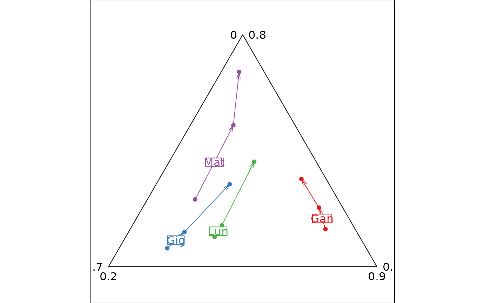

Ternary plot with trajectories
triangle.traject.RdThis function represents a three dimensional scatter plot with trajectories.
Arguments
- dfxyz
a three columns data frame, the first system of coordinates, used to produce the plot
- fac
a factor (or a matrix of factors) splitting the rows of
dfxyz- order
a vector containing the drawing order of the trajectories. A vector of length equal to factor.
- labels
a vector of character strings containing the trajectories' labels
- col
a color or a colors vector to color points, labels and lines
- adjust
a logical to adjust the device with the limits of the smaller equilateral triangle containing the values
- min3d
a vector of three values for triangular minimal limits
- max3d
a vector of three values for triangular maximal limits
- showposition
a logical indicating whether the used triangle should be shown in the complete one
- facets
a factor splitting the rows of
dfxyzso that subsets of the data are represented on different sub-graphics- plot
a logical indicating if the graphics is displayed
- storeData
a logical indicating if the data are stored in the returned object. If
FALSE, only the names of the data arguments are stored- add
a logical. If
TRUE, the graphic is superposed to the graphics already plotted in the current device- pos
an integer indicating the position of the environment where the data are stored, relative to the environment where the function is called. Useful only if
storeDataisFALSE- ...
additional graphical parameters (see
adegparandtrellis.par.get)
Details
The fac factor is used to display several trajectories: each level of fac is a specific trajectory.
Value
An object of class ADEg (subclass Tr.traject) or ADEgS (if showposition is TRUE,
if add is TRUE and/or if facets are used).
The result is displayed if plot is TRUE.
Author
Alice Julien-Laferriere, Aurelie Siberchicot aurelie.siberchicot@univ-lyon1.fr and Stephane Dray
Examples
exo1 <- matrix(c(51.88, 32.55, 15.57, 44.94, 34.59, 20.47, 25.95, 39.15, 34.9,
37.87, 43.19, 18.94, 34.2, 43.32, 22.48, 16.13, 42.18, 41.69,
7.76, 70.93, 21.31, 6.22, 65.96, 27.82, 6.44, 57.06, 36.5,
37.24, 32.45, 30.31, 16.09, 31.22, 52.69, 6.54, 24.68, 68.78),
ncol = 3, byr = TRUE)
exo1 <- as.data.frame(exo1)
names(exo1) <- c("agr", "ouv", "ter")
com <- as.factor(rep(c("Gig", "Lun", "Gan", "Mat"), c(3, 3, 3, 3)))
rec <- as.factor(rep(c("68", "75", "82"), 4))
row.names(exo1) <- paste(com, rec, sep = "")
tri1 <- triangle.traject(exo1, fac = com, showposition=FALSE,
pgrid.draw = FALSE, col = TRUE, axis.text = list(cex = 0))
